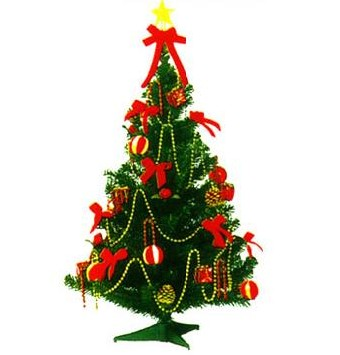

圣诞装饰

在西方国家里，圣诞节也是一个家庭团聚和喜庆的节日，通常会装扮圣诞树。不论是否基督徒，在西方过圣诞节时都要准备一棵圣诞树，以增加节日的欢乐气氛。圣诞树一般是用杉柏之类的常绿树做成，象征生命长存。树上装饰着各种灯烛、彩花、玩具、星星，挂上各种圣诞礼物。圣诞之夜，人们围着圣诞树唱歌跳舞，尽情欢乐。
圣诞装饰包括以圣诞装饰和圣诞灯装饰的圣诞树，户内以花环和常绿植物加以装饰，特别的冬青和槲寄生是传统采用的材料。在南北美洲和少数欧洲地区，传统上户外以灯光装饰，包括用灯火装饰的雪橇、雪人和其他圣诞形象。冬青和槲寄生是传统采用的材料.在南北美洲和少数欧洲地区，传统上户外以灯光装饰，包括用灯火装饰的雪橇，雪人和其他圣诞形象。
传统的圣诞花是猩猩木（别名一品红、圣诞红，花色有猩红、粉红、乳白等）.圣诞植物还包括冬青，红孤挺花，圣诞仙人掌。
普遍市政当局也会对圣诞装饰加以支持，在街道悬挂圣诞标语或者是在广场放置圣诞树。在美国，装饰还曾经因为包括了宗教主题而被多次起诉，控方认为这是政府认可某种特定宗教行为，违反了宗教自由。
返回